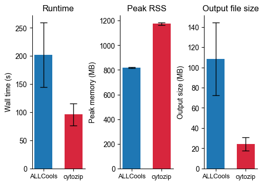
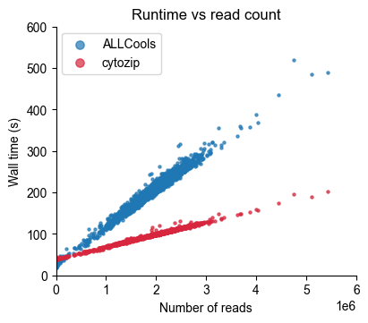
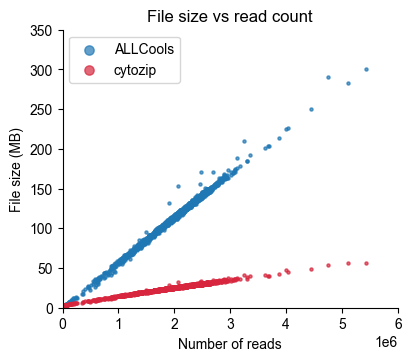
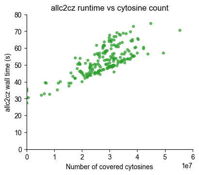
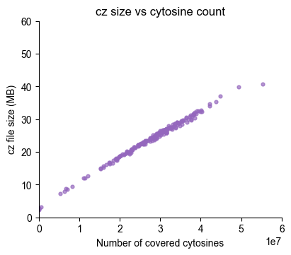

1. Prepare bam files
indir="name_sort_bam"
outdir="deduped_bam"
mkdir -p ${outdir}
rm -f name_sort_bam_to_deduped.sh
for file in `ls ${indir}`; do
outfile=${file/hisat3n_dna.all_reads.name_sort.bam/bam}
echo "czip name_sort_bam_to_deduped -I ${indir}/${file} -O ${outdir}/${outfile} --env yap" >> name_sort_bam_to_deduped.sh
done;
cat name_sort_bam_to_deduped.sh | parallel -j 96
2. Benchmark: bam_to_cz vs bam_to_allc
Convert every deduped, position-sorted BAM under to both formats and compare runtime and peak memory per cell:
bam_to_allc(ALLCools) →benchmark/allc/<cell>.allc.tsv.gzbam_to_cz(cytozip) →benchmark/cz/<cell>.cz
Each conversion runs as an isolated subprocess wrapped in /usr/bin/time -f '%e %M' so the reported wall-clock and peak RSS are measured independently. Per-cell metrics are written to bam_benchmark.tsv / bam_benchmark.txt and rendered as a grouped barplot (bam_benchmark.pdf, modelled on the one in 2.dnam.ipynb).
Set
N_CELLSin the config cell to a small number (e.g.24) for a quick, readable per-cell barplot; set it toNoneto process all BAM files.
[24]:
import os,sys
os.chdir(os.path.expanduser("~/Projects/test_cytozip"))
[25]:
! pwd
/anvil/projects/x-mcb130189/Wubin/test_cytozip
[26]:
import os, sys, time, subprocess, random
from pathlib import Path
from concurrent.futures import ThreadPoolExecutor, as_completed
import pandas as pd
# ---- paths --------------------------------------------------------------
BAM_DIR = Path("~/Projects/test_cytozip/deduped_bam").expanduser()
BASE = Path("~/Projects/test_cytozip/benchmark").expanduser()
ALLC_DIR = BASE / "allc" # bam_to_allc outputs
CZ_DIR = BASE / "cz" # bam_to_cz outputs
REF_FA = Path("~/Ref/hg38/hg38_ucsc_with_chrL.fa").expanduser()
REF_CZ = Path("~/Ref/hg38/hg38_with_chrL.allc.cz").expanduser()
REF_CHROM_SIZE = Path("~/Ref/hg38/hg38_ucsc_with_chrL.main.chrom.sizes").expanduser()
# czip build_ref -g ~/Ref/hg38/hg38_ucsc_with_chrL.fa -O ~/Ref/hg38/hg38_with_chrL.allc.cz -j 24 -s ~/Ref/hg38/hg38_ucsc_with_chrL.main.chrom.sizes
for d in (ALLC_DIR, CZ_DIR, BASE):
d.mkdir(parents=True, exist_ok=True)
# 119 CPU 220G (a009)
# ---- run parameters -----------------------------------------------------
N_CELLS = 2000 # None = ALL bam files; an int randomly samples N cells
SEED = 0 # RNG seed so the random cell subset is reproducible
JOBS = 64 # cells processed in parallel (each = 1 allc + 1 cz, serial)
PY = sys.executable
TIME_BIN = "/usr/bin/time"
# make `samtools` discoverable to child subprocesses (ALLCools shells out to it)
os.environ["PATH"] = str(Path(PY).parent) + os.pathsep + os.environ.get("PATH", "")
bams = sorted(BAM_DIR.glob("*.bam"))
bams = sorted(random.Random(SEED).sample(bams, min(N_CELLS, len(bams))))
bams = bams[:N_CELLS]
assert REF_FA.exists() and Path(str(REF_FA) + ".fai").exists(), "reference FASTA / .fai missing"
assert REF_CZ.exists(), f"reference .cz missing: {REF_CZ}"
print(f"{len(bams)} bam files to benchmark (JOBS={JOBS})")
print(f" allc -> {ALLC_DIR}")
print(f" cz -> {CZ_DIR}")
2000 bam files to benchmark (JOBS=64)
allc -> /home/x-wding2/Projects/test_cytozip/benchmark/allc
cz -> /home/x-wding2/Projects/test_cytozip/benchmark/cz
[27]:
# from ALLCools._bam_to_allc import bam_to_allc
# %time bam_to_allc(bam_path="deduped_bam/UWA7648_CX1819_NAC_1_P10-1-K18-A10.bam", \
# reference_fasta=str(REF_FA), \
# output_path="UWA7648_CX1819_NAC_1_P10-1-K18-A10.allc.tsv.gz", \
# chroms=str(REF_CHROM_SIZE),\
# cpu=1,num_upstr_bases=0, num_downstr_bases=2, \
# min_mapq=10, min_base_quality=20)
# CPU times: user 2min 37s, sys: 13.6 s, total: 2min 50s
# Wall time: 3min 3s
[28]:
# from cytozip.bam import bam_to_cz
# %time bam_to_cz(bam_path="deduped_bam/UWA7648_CX1819_NAC_1_P10-1-K18-A10.bam", \
# genome=str(REF_FA), chroms=str(REF_CHROM_SIZE),\
# output="UWA7648_CX1819_NAC_1_P10-1-K18-A10.cz", \
# reference=str(REF_CZ))
# CPU times: user 1min 18s, sys: 8.86 s, total: 1min 27s
# Wall time: 1min 29s
[29]:
# ---- one isolated call per tool, timed with /usr/bin/time -----------------
_ALLC_CALL = (
"from ALLCools._bam_to_allc import bam_to_allc; "
"bam_to_allc(bam_path={bam!r}, reference_fasta={fa!r}, "
"output_path={out!r}, chroms={chrom_size!r}, cpu=1, "
"num_upstr_bases=0, num_downstr_bases=2, "
"min_mapq=10, min_base_quality=20, compress_level=5)"
)
_CZ_CALL = (
"from cytozip.bam import bam_to_cz; "
"bam_to_cz(bam_path={bam!r}, genome={fa!r}, chroms={chrom_size!r}, "
"output={out!r}, mode='mc_cov', count_fmt='B', reference={ref!r}, "
"min_mapq=10, min_base_quality=20)"
)
def _time_child(cmd):
"""Run `cmd` under /usr/bin/time; return {ok, wall_s, rss_mb, stderr_tail}."""
wrapped = [TIME_BIN, "-f", "__TIME__ %e %M", "--"] + list(cmd)
res = subprocess.run(wrapped, capture_output=True, text=True)
wall_s, rss_mb = float("nan"), float("nan")
for line in res.stderr.splitlines()[::-1]:
if line.startswith("__TIME__"):
_, w, m = line.split()
wall_s, rss_mb = float(w), float(m) / 1024.0 # %M is peak RSS in KB
break
return dict(ok=res.returncode == 0, wall_s=wall_s, rss_mb=rss_mb,
stderr_tail="\n".join(res.stderr.splitlines()[-8:]))
def _count_reads(bam_path):
"""Number of alignment records in a BAM via `samtools view -c`."""
try:
res = subprocess.run(["samtools", "view", "-c", str(bam_path)],
capture_output=True, text=True)
return int(res.stdout.strip()) if res.returncode == 0 else float("nan")
except Exception:
return float("nan")
# ---- incremental per-cell log (appended the moment each cell finishes) -----
import threading
LOG_TSV = BASE / "bam_benchmark.log.tsv"
_LOG_COLS = ["cell", "bam_size_mb", "n_reads",
"allc_ok", "allc_wall_s", "allc_rss_mb", "allc_size_mb",
"cz_ok", "cz_wall_s", "cz_rss_mb", "cz_size_mb"]
_LOG_LOCK = threading.Lock()
def _append_log(row):
"""Thread-safe append of one cell's metrics to LOG_TSV (header written once)."""
line = "\t".join(str(row.get(c, "")) for c in _LOG_COLS)
with _LOG_LOCK:
new = (not LOG_TSV.exists()) or LOG_TSV.stat().st_size == 0
with open(LOG_TSV, "a") as f:
if new:
f.write("\t".join(_LOG_COLS) + "\n")
f.write(line + "\n")
def _load_log():
"""Load previously logged per-cell metrics as {cell: row_dict} (last wins)."""
if (not LOG_TSV.exists()) or LOG_TSV.stat().st_size == 0:
return {}
prev = pd.read_csv(LOG_TSV, sep="\t")
return {r["cell"]: r.to_dict() for _, r in prev.iterrows()}
def bench_one(bam_path, prev_log=None):
"""Convert one BAM to allc + cz, timing each conversion in isolation.
If both output files already exist (non-empty), skip the (re)conversion
and reuse the previously logged metrics (falling back to on-disk sizes).
"""
prev_log = prev_log or {}
bam = Path(bam_path)
cid = bam.name[:-4] # strip trailing ".bam"
allc_out = ALLC_DIR / f"{cid}.allc.tsv.gz"
cz_out = CZ_DIR / f"{cid}.cz"
# ---- skip if both outputs already exist ----
if (allc_out.exists() and allc_out.stat().st_size > 0
and cz_out.exists() and cz_out.stat().st_size > 0):
row = dict(prev_log.get(cid, {}))
row.update(cell=cid, bam_size_mb=bam.stat().st_size / 1e6,
allc_size_mb=allc_out.stat().st_size / 1e6,
cz_size_mb=cz_out.stat().st_size / 1e6)
# reuse a previously logged read count when available, else count now
if ("n_reads" not in row) or pd.isna(row.get("n_reads", float("nan"))):
row["n_reads"] = _count_reads(bam)
row.setdefault("allc_ok", True)
row.setdefault("cz_ok", True)
for k in ("allc_wall_s", "allc_rss_mb", "cz_wall_s", "cz_rss_mb"):
row.setdefault(k, float("nan"))
row.setdefault("allc_err", "")
row.setdefault("cz_err", "")
row["skipped"] = True
return row
# ---- run both conversions (start clean so sizes/timings reflect this run) ----
for p in (allc_out, Path(str(allc_out) + ".tbi"), cz_out):
if p.exists():
p.unlink()
n_reads = _count_reads(bam) # record read count for this cell
r_a = _time_child([PY, "-c", _ALLC_CALL.format(
bam=str(bam), fa=str(REF_FA), out=str(allc_out), chrom_size=str(REF_CHROM_SIZE))])
r_c = _time_child([PY, "-c", _CZ_CALL.format(
bam=str(bam), fa=str(REF_FA), out=str(cz_out), ref=str(REF_CZ), chrom_size=str(REF_CHROM_SIZE))])
row = dict(
cell=cid,
bam_size_mb=bam.stat().st_size / 1e6,
n_reads=n_reads,
allc_ok=r_a["ok"], allc_wall_s=r_a["wall_s"], allc_rss_mb=r_a["rss_mb"],
allc_size_mb=(allc_out.stat().st_size / 1e6) if allc_out.exists() else 0.0,
cz_ok=r_c["ok"], cz_wall_s=r_c["wall_s"], cz_rss_mb=r_c["rss_mb"],
cz_size_mb=(cz_out.stat().st_size / 1e6) if cz_out.exists() else 0.0,
allc_err=r_a["stderr_tail"], cz_err=r_c["stderr_tail"],
skipped=False,
)
_append_log(row) # persist this cell's metrics immediately
return row
[30]:
def _report(i, r):
if r.get("skipped"):
tag = "SKIP"
elif r["allc_ok"] and r["cz_ok"]:
tag = "OK "
else:
tag = "FAIL"
if tag=='FAIL':
print(f"[{i:>3}/{len(bams)}] {tag} {r['cell']:<40} "
f"allc={r['allc_wall_s']:6.1f}s/{r['allc_rss_mb']:6.0f}MB "
f"cz={r['cz_wall_s']:6.1f}s/{r['cz_rss_mb']:6.0f}MB", flush=True)
print(" allc_err:", r["allc_err"][-300:])
print(" cz_err :", r["cz_err"][-300:])
[31]:
# ---- per-cell table -------------------------------------------------------
LOG_TSV = BASE / "bam_benchmark.log.tsv"
if LOG_TSV.exists() and LOG_TSV.stat().st_size > 0:
# reuse the incrementally-written per-cell log instead of rebuilding from rows
df = pd.read_csv(LOG_TSV, sep="\t").sort_values("cell").reset_index(drop=True)
print("read", LOG_TSV)
else:
# ---- run the benchmark --------------------------------------------------
prev_log = _load_log() # reuse metrics for already-converted cells
t0 = time.perf_counter()
rows = []
if JOBS == 1:
for i, b in enumerate(bams, 1):
r = bench_one(str(b), prev_log)
rows.append(r)
_report(i, r)
else:
with ThreadPoolExecutor(max_workers=JOBS) as ex:
futs = {ex.submit(bench_one, str(b), prev_log): b for b in bams}
for i, fut in enumerate(as_completed(futs), 1):
r = fut.result()
rows.append(r)
_report(i, r)
print(f"\ntotal wall-clock: {time.perf_counter() - t0:.1f}s")
df = pd.DataFrame(sorted(rows, key=lambda r: r["cell"]))
df = df.drop(columns=["allc_err", "cz_err"], errors="ignore")
df["speedup"] = df["allc_wall_s"] / df["cz_wall_s"]
df["mem_ratio"] = df["cz_rss_mb"] / df["allc_rss_mb"]
df["size_ratio"] = df["cz_size_mb"] / df["allc_size_mb"]
tsv = BASE / "bam_benchmark.tsv"
df.to_csv(tsv, sep="\t", index=False, float_format="%.4f")
print("wrote", tsv)
df.round(2)
read /home/x-wding2/Projects/test_cytozip/benchmark/bam_benchmark.log.tsv
wrote /home/x-wding2/Projects/test_cytozip/benchmark/bam_benchmark.tsv
[31]:
| cell | bam_size_mb | n_reads | allc_ok | allc_wall_s | allc_rss_mb | allc_size_mb | cz_ok | cz_wall_s | cz_rss_mb | cz_size_mb | speedup | mem_ratio | size_ratio | |
|---|---|---|---|---|---|---|---|---|---|---|---|---|---|---|
| 0 | UWA7648_CX1819_NAC_1_P1-1-I3-A1 | 175.44 | 1790879 | True | 195.08 | 818.80 | 102.41 | True | 93.47 | 1171.36 | 23.42 | 2.09 | 1.43 | 0.23 |
| 1 | UWA7648_CX1819_NAC_1_P1-1-I3-A10 | 174.83 | 1799068 | True | 187.59 | 818.76 | 100.89 | True | 92.72 | 1172.56 | 22.96 | 2.02 | 1.43 | 0.23 |
| 2 | UWA7648_CX1819_NAC_1_P1-1-I3-A11 | 212.72 | 2179861 | True | 226.05 | 820.39 | 123.51 | True | 103.83 | 1172.82 | 27.43 | 2.18 | 1.43 | 0.22 |
| 3 | UWA7648_CX1819_NAC_1_P1-1-I3-A12 | 200.91 | 2069300 | True | 228.31 | 820.22 | 116.86 | True | 99.90 | 1170.23 | 25.88 | 2.29 | 1.43 | 0.22 |
| 4 | UWA7648_CX1819_NAC_1_P1-1-I3-A14 | 147.81 | 1518263 | True | 165.34 | 819.25 | 86.21 | True | 83.59 | 1169.82 | 20.28 | 1.98 | 1.43 | 0.24 |
| ... | ... | ... | ... | ... | ... | ... | ... | ... | ... | ... | ... | ... | ... | ... |
| 1995 | UWA7648_CX1819_NAC_1_P9-1-M14-P21 | 186.10 | 1891577 | True | 198.13 | 818.49 | 109.12 | True | 95.70 | 1171.62 | 24.73 | 2.07 | 1.43 | 0.23 |
| 1996 | UWA7648_CX1819_NAC_1_P9-1-M14-P22 | 170.61 | 1737293 | True | 175.84 | 818.51 | 99.03 | True | 88.85 | 1170.87 | 22.64 | 1.98 | 1.43 | 0.23 |
| 1997 | UWA7648_CX1819_NAC_1_P9-1-M14-P3 | 209.62 | 2108920 | True | 211.04 | 818.32 | 123.38 | True | 102.81 | 1191.16 | 27.40 | 2.05 | 1.46 | 0.22 |
| 1998 | UWA7648_CX1819_NAC_1_P9-1-M14-P5 | 172.25 | 1753059 | True | 178.78 | 818.68 | 98.67 | True | 90.24 | 1171.31 | 22.20 | 1.98 | 1.43 | 0.23 |
| 1999 | UWA7648_CX1819_NAC_1_P9-1-M14-P7 | 143.79 | 1452256 | True | 152.25 | 819.05 | 82.76 | True | 80.13 | 1172.27 | 19.40 | 1.90 | 1.43 | 0.23 |
2000 rows × 14 columns
[32]:
# ---- aggregate summary written to a text file -----------------------------
# keep only cells where BOTH allc and cz succeeded; if more than N_CELLS
# remain, randomly sample N_CELLS of them for the summary and all plots below.
df = df[df["allc_ok"] & df["cz_ok"]].reset_index(drop=True)
if N_CELLS is not None and len(df) > N_CELLS:
df = df.sample(n=N_CELLS, random_state=SEED).sort_values("cell").reset_index(drop=True)
print(f"using {len(df)} cell(s) (allc_ok & cz_ok) for summary and plots")
tot_at, tot_ct = df["allc_wall_s"].sum(), df["cz_wall_s"].sum()
max_arss, max_crss = df["allc_rss_mb"].max(), df["cz_rss_mb"].max()
mean_arss, mean_crss = df["allc_rss_mb"].mean(), df["cz_rss_mb"].mean()
tot_as, tot_cs = df["allc_size_mb"].sum(), df["cz_size_mb"].sum()
txt = BASE / "bam_benchmark.txt"
txt.write_text(
"cytozip bam_to_cz vs ALLCools bam_to_allc\n"
"============================================\n"
f"reference FASTA : {REF_FA}\n"
f"reference .cz : {REF_CZ}\n"
f"cells : {len(df)}\n"
"\n"
f"ALLCools : time={tot_at:9.1f} s peak_rss(max)={max_arss:7.1f} MB "
f"mean_rss={mean_arss:7.1f} MB size={tot_as:8.1f} MB\n"
f"cytozip : time={tot_ct:9.1f} s peak_rss(max)={max_crss:7.1f} MB "
f"mean_rss={mean_crss:7.1f} MB size={tot_cs:8.1f} MB\n"
"\n"
f"speedup (allc / cz time) = {tot_at / max(tot_ct, 1e-9):5.2f}x\n"
f"memory (cz / allc mean rss) = {mean_crss / max(mean_arss, 1e-9) * 100:5.1f}%\n"
f"compress (cz / allc size) = {tot_cs / max(tot_as, 1e-9) * 100:5.1f}%\n"
)
print(txt.read_text())
using 2000 cell(s) (allc_ok & cz_ok) for summary and plots
cytozip bam_to_cz vs ALLCools bam_to_allc
============================================
reference FASTA : /home/x-wding2/Ref/hg38/hg38_ucsc_with_chrL.fa
reference .cz : /home/x-wding2/Ref/hg38/hg38_with_chrL.allc.cz
cells : 2000
ALLCools : time= 404399.5 s peak_rss(max)= 825.5 MB mean_rss= 818.3 MB size=216815.3 MB
cytozip : time= 192315.6 s peak_rss(max)= 1360.5 MB mean_rss= 1174.7 MB size= 48255.4 MB
speedup (allc / cz time) = 2.10x
memory (cz / allc mean rss) = 143.6%
compress (cz / allc size) = 22.3%
[34]:
# ---- barplot: average runtime, peak memory & output size (mean +/- SD) -----
import numpy as np
import matplotlib as mpl
import matplotlib.pyplot as plt
mpl.rcParams['pdf.fonttype'] = 42
mpl.rcParams['font.family'] = 'Arial'
d = df.copy()
n = len(d)
c_allc, c_cz = '#1f77b4', '#d7263d'
x = np.arange(2) # two tools per panel
metrics = [
('allc_wall_s', 'cz_wall_s', 'Wall time (s)', 'Runtime'),
('allc_rss_mb', 'cz_rss_mb', 'Peak memory (MB)', 'Peak RSS'),
('allc_size_mb', 'cz_size_mb', 'Output size (MB)', 'Output file size'),
]
fig, axes = plt.subplots(1, 3, figsize=(5, 3.5), constrained_layout=True)
for ax, (a_col, c_col, ylabel, title) in zip(axes, metrics):
means = [d[a_col].mean(), d[c_col].mean()]
sds = [d[a_col].std(), d[c_col].std()]
ax.bar(x, means, yerr=sds, capsize=5, color=[c_allc, c_cz],
width=0.6, error_kw=dict(ecolor='black', lw=1))
ax.set_xticks(x)
ax.set_xticklabels(['ALLCools', 'cytozip'], fontsize=9)
ax.set_ylabel(ylabel)
ax.set_title(title)
for s in ('top', 'right'):
ax.spines[s].set_visible(False)
tot_at, tot_ct = d['allc_wall_s'].sum(), d['cz_wall_s'].sum()
tot_as, tot_cs = d['allc_size_mb'].sum(), d['cz_size_mb'].sum()
# fig.suptitle(
# f'BAM \u2192 ALLC vs BAM \u2192 CZ\n(n={n} cells, mean \u00b1 SD) '
# f'time: {tot_at:.0f} \u2192 {tot_ct:.0f} s '
# f'({tot_at / max(tot_ct, 1e-9):.2f}\u00d7 faster) '
# f'mean RSS: {d["allc_rss_mb"].mean():.0f} \u2192 {d["cz_rss_mb"].mean():.0f} MB '
# f'size: {tot_as:.0f} \u2192 {tot_cs:.0f} MB '
# f'({tot_cs / max(tot_as, 1e-9) * 100:.1f}%)',
# fontsize=10,
# )
fig.savefig(BASE / 'bam_benchmark.pdf', bbox_inches='tight')
plt.show()
# ---- scatter plot: runtime vs number of reads (allc vs cz) ----------------
if 'n_reads' in d.columns:
dl = d.dropna(subset=['n_reads'])
fig2, ax2 = plt.subplots(figsize=(4, 3.5), constrained_layout=True)
ax2.scatter(dl['n_reads'], dl['allc_wall_s'], s=5, alpha=0.7,
color=c_allc, label='ALLCools',marker='o')
ax2.scatter(dl['n_reads'], dl['cz_wall_s'], s=5, alpha=0.7,
color=c_cz, label='cytozip',marker='o')
ax2.set_xlabel('Number of reads')
ax2.set_ylabel('Wall time (s)')
ax2.set_xlim(0,6e6)
ax2.set_ylim(0,600)
ax2.set_title('Runtime vs read count')
ax2.legend(frameon=True, fontsize=10,markerscale=3)
for s in ('top', 'right'):
ax2.spines[s].set_visible(False)
fig2.savefig(BASE / 'bam_benchmark.runtime_vs_reads.pdf', bbox_inches='tight')
plt.show()
# ---- scatter plot: output file size vs number of reads (allc vs cz) --------
if 'n_reads' in d.columns:
dl = d.dropna(subset=['n_reads'])
fig3, ax3 = plt.subplots(figsize=(4, 3.5), constrained_layout=True)
ax3.scatter(dl['n_reads'], dl['allc_size_mb'], s=5, alpha=0.7,
color=c_allc, label='ALLCools',marker='o')
ax3.scatter(dl['n_reads'], dl['cz_size_mb'], s=5, alpha=0.7,
color=c_cz, label='cytozip',marker='o')
ax3.set_xlim(0,6e6)
ax3.set_ylim(0, 350)
ax3.set_xlabel('Number of reads')
ax3.set_ylabel('File size (MB)')
ax3.set_title('File size vs read count')
ax3.legend(frameon=True, fontsize=10, markerscale=3)
for s in ('top', 'right'):
ax3.spines[s].set_visible(False)
fig3.savefig(BASE / 'bam_benchmark.filesize_vs_reads.pdf', bbox_inches='tight')
plt.show()



[11]:
# runtime: 215 s for allc and 100s for .cz on average
3. Validate: do allc and cz store the same values?
Load the entire allc and cz files into memory and compare their (mc, cov) values position-by-position. Any inconsistent record is printed.
Comparison rules (matching how each file stores data):
cz is written in
mode='mc_cov', so it keeps only[mc, cov]aligned 1:1 with the reference.czpositions. We recover coordinates fromREF_CZand drop records with ``cov == 0`` before comparing.cz stores counts as
uint8(count_fmt='B', max 255). Records whose original allc ``mc`` or ``cov`` exceeds 255 are excluded from the comparison (they can’t be matched exactly against the truncated cz value).ALLCools
bam_to_allchas a known bug: the last cytosine of every chromosome is dropped. cz-only sites at each chromosome’s last reference position are flagged separately (expected, not a real discrepancy).
We merge on (chrom, pos) and print every inconsistent record (value mismatch, allc-only, or real cz-only).
[12]:
# ---- helpers to load full allc / cz files for value comparison ------------
import numpy as np
from cytozip.cz import Reader
# cz stores mc/cov as uint8 ('B'), max 255. We keep the RAW allc values and
# later EXCLUDE any record whose original mc/cov > 255 (can't be compared
# exactly against the truncated cz). cz mode='mc_cov' stores every reference
# position; `Reader.to_df(reference=...)` recovers coordinates/strand/context
# and drops cov == 0 rows (drop_zero_cov=True by default).
COUNT_MAX = 255
def load_allc(allc_path):
"""Full ALLCools .allc.tsv.gz -> (chrom, pos, mc_allc, cov_allc), raw."""
return pd.read_csv(
allc_path, sep="\t", header=None, usecols=[0, 1, 4, 5],
names=["chrom", "pos", "mc_allc", "cov_allc"],
dtype={"chrom": str, "pos": np.int64,
"mc_allc": np.int64, "cov_allc": np.int64},
)
def load_cz(cz_path, reference=REF_CZ):
"""Full mode='mc_cov' cz -> (chrom, pos, strand, context, mc_cz, cov_cz).
Uses ``Reader.to_df``: coordinates/strand/context come from the row-aligned
reference and rows with cov == 0 are dropped (drop_zero_cov=True default).
"""
r = Reader(str(cz_path))
try:
df = r.to_df(reference=str(reference))
finally:
r.close()
return df.rename(columns={"mc": "mc_cz", "cov": "cov_cz"})
# ---- randomly pick N_COMPARE cell(s) that have BOTH an allc and a cz output
N_COMPARE = 100 # how many cells to compare (whole files loaded in memory)
_paired = [p.name[:-3] for p in sorted(CZ_DIR.glob("*.cz"))
if (ALLC_DIR / f"{p.name[:-3]}.allc.tsv.gz").exists()]
CMP_CIDS = sorted(random.Random(SEED).sample(_paired, min(N_COMPARE, len(_paired))))
print(f"will compare {len(CMP_CIDS)} cell(s):")
# for cid in CMP_CIDS:
# print(" ", cid)
will compare 100 cell(s):
[13]:
# ---- compare full allc vs cz per cell (parallel across cells) -------------
from concurrent.futures import ProcessPoolExecutor, as_completed
# Each worker's load_cz -> to_df(reference=...) transiently decodes a whole
# chromosome of the reference (~1-2 GB) plus the allc table + merge. Running
# JOBS=64 of these at once exhausts RAM and the OS kills a worker, which the
# pool reports as `BrokenProcessPool`. Cap concurrency to keep peak memory
# bounded (tune CMP_JOBS up/down for your machine).
CMP_JOBS = min(12, JOBS, max(1, len(CMP_CIDS)))
print(CMP_JOBS)
def _compare_allc_cz(cid):
"""Compare one cell's allc vs cz; return (cid, n_bad, report_text)."""
a = load_allc(ALLC_DIR / f"{cid}.allc.tsv.gz") # whole allc (raw)
c = load_cz(CZ_DIR / f"{cid}.cz") # whole cz (cov>0) via to_df
m = a.merge(c[["chrom", "pos", "mc_cz", "cov_cz"]],
on=["chrom", "pos"], how="outer", indicator=True)
# EXCLUDE records affected by uint8 (255) truncation: any allc raw
# mc/cov > 255 can't be compared exactly against the clipped cz value.
truncated = ((m["mc_allc"] > COUNT_MAX) | (m["cov_allc"] > COUNT_MAX)).fillna(False)
n_truncated = int(truncated.sum())
m = m[~truncated].copy()
both = m["_merge"] == "both"
cz_only = m["_merge"] == "right_only" # in cz (cov>0), not in allc
allc_only = m["_merge"] == "left_only" # in allc, cz cov==0 or absent
# value mismatch on shared positions
val_mis = both & ((m["mc_allc"] != m["mc_cz"]) | (m["cov_allc"] != m["cov_cz"]))
# cz-only at each chrom's LAST covered position = known ALLCools
# "drops the last cytosine of every chromosome" bug (not a cz error).
last_pos = c.groupby("chrom")["pos"].max()
m["last_pos"] = m["chrom"].map(last_pos)
cz_only_lastC = cz_only & (m["pos"] == m["last_pos"])
bad = m[val_mis | allc_only | (cz_only & ~cz_only_lastC)].copy()
bad["issue"] = np.where(
bad["_merge"] == "left_only", "allc_only",
np.where(bad["_merge"] == "right_only", "cz_only", "value_mismatch"))
lines = [
f"\n===== {cid} =====",
f" allc records : {len(a):,}",
f" cz covered records (cov>0) : {len(c):,}",
f" excluded (mc/cov > 255) : {n_truncated:,}",
f" compared shared positions : {int(both.sum()):,}",
f" value mismatches : {int(val_mis.sum()):,}",
f" allc-only (cz cov==0/absent) : {int(allc_only.sum()):,}",
f" cz-only (real) : {int((cz_only & ~cz_only_lastC).sum()):,}",
f" cz-only (ALLCools last-C bug): {int(cz_only_lastC.sum()):,}",
]
if len(bad):
cols = ["chrom", "pos", "mc_allc", "cov_allc", "mc_cz", "cov_cz", "issue"]
lines.append(f"\n --- {len(bad):,} INCONSISTENT records ---")
with pd.option_context("display.max_rows", None, "display.width", 200):
lines.append(bad[cols].sort_values(["chrom", "pos"]).to_string(index=False))
return cid, len(bad), "\n".join(lines)
_reports, _nbad = {}, {}
with ProcessPoolExecutor(max_workers=CMP_JOBS) as ex:
futs = {ex.submit(_compare_allc_cz, cid): cid for cid in CMP_CIDS}
for i, fut in enumerate(as_completed(futs), 1):
cid, n_bad, report = fut.result()
_reports[cid] = report
_nbad[cid] = n_bad
print(f"{i}/{len(CMP_CIDS)} {cid}", end="\r")
# only print the inconsistent cells (stable cell order)
for cid in CMP_CIDS:
if _nbad[cid] > 0:
print(_reports[cid])
n_inconsistent = sum(1 for cid in CMP_CIDS if _nbad[cid] > 0)
n_identical = len(CMP_CIDS) - n_inconsistent
print(f"\n===== summary =====")
print(f" cells compared : {len(CMP_CIDS)}")
print(f" identical : {n_identical}")
print(f" inconsistent : {n_inconsistent}")
12
100/100 UWA7648_CX1819_NAC_1_P9-1-M14-N15
===== summary =====
cells compared : 100
identical : 100
inconsistent : 0
4. Benchmark: allc2cz (allc → cz) and compare with bam_to_cz
Convert every benchmark/allc/<cell>.allc.tsv.gz to a .cz file with cytozip.allc.allc2cz, writing the results to benchmark/allc2cz/<cell>.cz (created here). Each conversion runs as an isolated subprocess wrapped in /usr/bin/time -f '%e %M' so runtime and peak memory are measured independently per cell, and parallelised across cells.
Then:
Scatter plot: X = number of covered cytosines per cell, Y =
allc2czruntime.Consistency check: compare
benchmark/cz/<cell>.cz(frombam_to_cz) againstbenchmark/allc2cz/<cell>.cz(fromallc2cz) position-by-position. Both are written inmode='mc_cov'withuint8('B') counts and are row-aligned to the same reference, so a direct array comparison is exact.
[14]:
# ---- allc2cz benchmark: paths, call template, per-cell bench function ------
ALLC2CZ_DIR = BASE / "allc2cz" # allc2cz outputs
ALLC2CZ_DIR.mkdir(parents=True, exist_ok=True)
# one isolated allc2cz call, timed with /usr/bin/time (reuses _time_child)
_ALLC2CZ_CALL = (
"from cytozip.allc import allc2cz; "
"allc2cz(input={allc!r}, output={out!r}, reference={ref!r})"
)
# incremental per-cell log for allc2cz (same pattern as the bam benchmark)
LOG_A2C_TSV = BASE / "allc2cz_benchmark.log.tsv"
_A2C_LOG_COLS = ["cell", "allc_size_mb", "a2c_ok", "a2c_wall_s",
"a2c_rss_mb", "a2c_cz_size_mb"]
_A2C_LOG_LOCK = threading.Lock()
def _append_a2c_log(row):
line = "\t".join(str(row.get(c, "")) for c in _A2C_LOG_COLS)
with _A2C_LOG_LOCK:
new = (not LOG_A2C_TSV.exists()) or LOG_A2C_TSV.stat().st_size == 0
with open(LOG_A2C_TSV, "a") as f:
if new:
f.write("\t".join(_A2C_LOG_COLS) + "\n")
f.write(line + "\n")
def _load_a2c_log():
if (not LOG_A2C_TSV.exists()) or LOG_A2C_TSV.stat().st_size == 0:
return {}
prev = pd.read_csv(LOG_A2C_TSV, sep="\t")
return {r["cell"]: r.to_dict() for _, r in prev.iterrows()}
def bench_one_allc2cz(cid, prev_log=None):
"""Convert one allc.tsv.gz to cz with allc2cz, timing it in isolation.
Skips (and reuses logged metrics) when the output .cz already exists.
"""
prev_log = prev_log or {}
allc_in = ALLC_DIR / f"{cid}.allc.tsv.gz"
cz_out = ALLC2CZ_DIR / f"{cid}.cz"
if cz_out.exists() and cz_out.stat().st_size > 0:
row = dict(prev_log.get(cid, {}))
row.update(cell=cid, allc_size_mb=allc_in.stat().st_size / 1e6,
a2c_cz_size_mb=cz_out.stat().st_size / 1e6)
row.setdefault("a2c_ok", True)
for k in ("a2c_wall_s", "a2c_rss_mb"):
row.setdefault(k, float("nan"))
row.setdefault("a2c_err", "")
row["skipped"] = True
return row
# allc2cz skips when output exists; start clean so timing reflects this run
if cz_out.exists():
cz_out.unlink()
r = _time_child([PY, "-c", _ALLC2CZ_CALL.format(
allc=str(allc_in), out=str(cz_out), ref=str(REF_CZ))])
row = dict(
cell=cid,
allc_size_mb=allc_in.stat().st_size / 1e6,
a2c_ok=r["ok"], a2c_wall_s=r["wall_s"], a2c_rss_mb=r["rss_mb"],
a2c_cz_size_mb=(cz_out.stat().st_size / 1e6) if cz_out.exists() else 0.0,
a2c_err=r["stderr_tail"], skipped=False,
)
_append_a2c_log(row)
return row
# cells to convert = the allc files produced in section 2
a2c_cids = sorted(p.name[:-len(".allc.tsv.gz")]
for p in ALLC_DIR.glob("*.allc.tsv.gz"))
if N_CELLS is not None and len(a2c_cids) > N_CELLS:
a2c_cids = sorted(random.Random(SEED).sample(a2c_cids, N_CELLS))
print(f"{len(a2c_cids)} allc file(s) to convert with allc2cz (JOBS={JOBS})")
print(f" allc2cz -> {ALLC2CZ_DIR}")
2000 allc file(s) to convert with allc2cz (JOBS=64)
allc2cz -> /home/x-wding2/Projects/test_cytozip/benchmark/allc2cz
[15]:
def _report_a2c(i, r):
if not r.get("a2c_ok", True):
print(f"[{i:>3}/{len(a2c_cids)}] FAIL {r['cell']:<40} "
f"a2c={r['a2c_wall_s']:6.1f}s/{r['a2c_rss_mb']:6.0f}MB", flush=True)
print(" a2c_err:", r.get("a2c_err", "")[-300:])
[16]:
# ---- table + scatter: covered cytosines vs allc2cz runtime -----------------
import numpy as np
import matplotlib as mpl
import matplotlib.pyplot as plt
from concurrent.futures import ProcessPoolExecutor
from cytozip.cz import Reader
mpl.rcParams['pdf.fonttype'] = 42
mpl.rcParams['font.family'] = 'Arial'
tsv = BASE / "allc2cz_benchmark.tsv"
def _count_cytosines(cz_path):
"""Number of covered cytosines (cov > 0) stored in a mode='mc_cov' cz."""
cell = Reader(str(cz_path))
n = 0
for dim in cell.chunk_key2offset.keys():
arr = cell.chunk2numpy(dim)
n += int((arr["f1"] > 0).sum()) # f1 = cov
cell.close()
return n
if tsv.exists() and tsv.stat().st_size > 0:
# reuse the previously computed table (includes n_cytosines)
dfa = pd.read_csv(tsv, sep="\t")
print("read", tsv)
else:
# load the incremental per-cell log
if LOG_A2C_TSV.exists() and LOG_A2C_TSV.stat().st_size > 0:
dfa = pd.read_csv(LOG_A2C_TSV, sep="\t").drop_duplicates(
"cell", keep="last").sort_values("cell").reset_index(drop=True)
else:
# ---- run the allc2cz benchmark --------------------------------------------
prev_a2c = _load_a2c_log() # reuse metrics for already-converted cells
t0 = time.perf_counter()
a2c_rows = []
if JOBS == 1:
for i, cid in enumerate(a2c_cids, 1):
r = bench_one_allc2cz(cid, prev_a2c)
a2c_rows.append(r)
_report_a2c(i, r)
else:
with ProcessPoolExecutor(max_workers=JOBS) as ex:
futs = {ex.submit(bench_one_allc2cz, cid, prev_a2c): cid for cid in a2c_cids}
for i, fut in enumerate(as_completed(futs), 1):
r = fut.result()
a2c_rows.append(r)
_report_a2c(i, r)
print(f"\ntotal wall-clock: {time.perf_counter() - t0:.1f}s")
dfa = pd.DataFrame(a2c_rows).drop(columns=["a2c_err"], errors="ignore")
dfa = dfa[dfa["a2c_ok"] == True].reset_index(drop=True)
if N_CELLS is not None and len(dfa) > N_CELLS:
dfa = dfa.sample(n=N_CELLS, random_state=SEED).sort_values("cell").reset_index(drop=True)
# count covered cytosines per cell in parallel (order-preserving)
cz_paths = [str(ALLC2CZ_DIR / f"{c}.cz") for c in dfa["cell"]]
with ProcessPoolExecutor(max_workers=JOBS) as ex:
dfa["n_cytosines"] = list(ex.map(_count_cytosines, cz_paths))
dfa.to_csv(tsv, sep="\t", index=False, float_format="%.4f")
print("wrote", tsv)
print(f"allc2cz: n={len(dfa)} mean time={dfa['a2c_wall_s'].mean():.1f}s "
f"mean peak_rss={dfa['a2c_rss_mb'].mean():.0f}MB")
read /home/x-wding2/Projects/test_cytozip/benchmark/allc2cz_benchmark.tsv
allc2cz: n=200 mean time=52.5s mean peak_rss=3709MB
[17]:
# scatter: X = number of covered cytosines, Y = allc2cz runtime
fig, ax = plt.subplots(figsize=(4, 3.5), constrained_layout=True)
ax.scatter(dfa["n_cytosines"], dfa["a2c_wall_s"], s=12, alpha=0.7, color='#2ca02c')
ax.set_xlabel('Number of covered cytosines')
ax.set_ylabel('allc2cz wall time (s)')
ax.set_title('allc2cz runtime vs cytosine count')
ax.set_xlim(0, 6e7)
ax.set_ylim(0, 80)
for s in ('top', 'right'):
ax.spines[s].set_visible(False)
fig.savefig(BASE / 'allc2cz_benchmark.runtime_vs_cytosines.pdf', bbox_inches='tight')
plt.show()
# scatter: X = number of covered cytosines, Y = cz output file size
fig, ax = plt.subplots(figsize=(4, 3.5), constrained_layout=True)
ax.scatter(dfa["n_cytosines"], dfa["a2c_cz_size_mb"], s=12, alpha=0.7, color='#9467bd')
ax.set_xlabel('Number of covered cytosines')
ax.set_ylabel('cz file size (MB)')
ax.set_xlim(0, 6e7)
ax.set_ylim(0, 60)
ax.set_title('cz size vs cytosine count')
for s in ('top', 'right'):
ax.spines[s].set_visible(False)
fig.savefig(BASE / 'allc2cz_benchmark.czsize_vs_cytosines.pdf', bbox_inches='tight')
plt.show()


Compare bam_to_cz cz vs allc2cz cz
For every cell with outputs in both benchmark/cz/ (from bam_to_cz) and benchmark/allc2cz/ (from allc2cz), compare the two .cz files position-by-position. Both are mode='mc_cov', uint8 counts, and row-aligned to the same reference .cz, so the arrays line up 1:1 per chromosome and can be compared directly. Any (mc, cov) mismatch is a real difference between calling methylation from the BAM directly vs going through the ALLCools allc file.
[18]:
# ---- compare bam_to_cz cz vs allc2cz cz via Reader.to_df (parallel) --------
from cytozip.cz import Reader
from concurrent.futures import ProcessPoolExecutor, as_completed
N_COMPARE = 100
KEYS = ["chrom", "pos", "strand", "context"]
def compare_two_cz(cz_a, cz_b, reference=REF_CZ):
"""Compare two mode='mc_cov' cz files using ``Reader.to_df``.
Both files are decoded against the same reference (coordinates + strand +
context, cov>0 only) and joined on (chrom, pos, strand, context). Positions
covered in only one file are treated as (mc, cov)=(0, 0) on the other side.
Returns (n_positions_union, DataFrame_of_mismatches).
"""
ra, rb = Reader(str(cz_a)), Reader(str(cz_b))
try:
da = ra.to_df(reference=str(reference)).rename(
columns={"mc": "a_mc", "cov": "a_cov"})
db = rb.to_df(reference=str(reference)).rename(
columns={"mc": "b_mc", "cov": "b_cov"})
finally:
ra.close()
rb.close()
m = da.set_index(KEYS).join(db.set_index(KEYS), how="outer")
val_cols = ["a_mc", "a_cov", "b_mc", "b_cov"]
m[val_cols] = m[val_cols].fillna(0)
bad = m[(m["a_mc"] != m["b_mc"]) | (m["a_cov"] != m["b_cov"])]
return len(m), bad
def _compare_pair(cid):
"""Worker: compare one cell's two cz files; return (cid, n_pos, n_mis, head)."""
n_pos, bad = compare_two_cz(CZ_DIR / f"{cid}.cz", ALLC2CZ_DIR / f"{cid}.cz")
head = ""
if len(bad):
with pd.option_context("display.max_rows", 20, "display.width", 200):
head = bad.reset_index().head(20).to_string(index=False)
return cid, int(n_pos), int(len(bad)), head
# cells present in BOTH benchmark/cz and benchmark/allc2cz
_paired = sorted(p.name[:-3] for p in ALLC2CZ_DIR.glob("*.cz")
if (CZ_DIR / f"{p.name[:-3]}.cz").exists())
if N_COMPARE is not None and len(_paired) > N_COMPARE:
_paired = sorted(random.Random(SEED).sample(_paired, N_COMPARE))
print(f"comparing {len(_paired)} cell(s): bam_to_cz vs allc2cz\n")
# Each worker decodes TWO whole-chromosome references via to_df (~2-4 GB peak),
# so keep concurrency low to avoid OOM -> BrokenProcessPool.
CMP_JOBS = min(8, JOBS, max(1, len(_paired)))
_res = {}
with ProcessPoolExecutor(max_workers=CMP_JOBS) as ex:
futs = {ex.submit(_compare_pair, cid): cid for cid in _paired}
for i, fut in enumerate(as_completed(futs), 1):
cid, n_pos, n_mis, head = fut.result()
_res[cid] = (n_pos, n_mis, head)
print(f"{i}/{len(_paired)} {cid}", end="\r")
tot_pos, tot_mis, n_identical = 0, 0, 0
for cid in _paired:
n_pos, n_mis, head = _res[cid]
tot_pos += n_pos
tot_mis += n_mis
if n_mis == 0:
n_identical += 1
continue
# only print inconsistent cells
print(f" {cid:<45} {n_pos:>12,} positions {n_mis:,} mismatches")
if head:
print(head)
n_inconsistent = len(_paired) - n_identical
print(f"\n===== summary =====")
print(f" cells compared : {len(_paired)}")
print(f" identical : {n_identical}")
print(f" inconsistent : {n_inconsistent}")
print(f" total positions (union) : {tot_pos:,}")
print(f" total (mc,cov) mismatches : {tot_mis:,}"
f" ({tot_mis / max(tot_pos, 1) * 100:.4g}%)")
comparing 100 cell(s): bam_to_cz vs allc2cz
100/100 UWA7648_CX1819_NAC_1_P9-1-M14-N15
===== summary =====
cells compared : 100
identical : 100
inconsistent : 0
total positions (union) : 2,793,100,038
total (mc,cov) mismatches : 0 (0%)
[22]:
from cytozip import Reader
reader1=Reader("benchmark/cz/UWA7648_CX1819_NAC_1_P13-1-I24-B15.cz")
df1=reader1.to_df(reference="~/Ref/hg38/hg38_with_chrL.allc.cz")
df1.rename(columns={'mc':'cz_mc','cov':'cz_cov'},inplace=True)
reader2=Reader("benchmark/allc2cz/UWA7648_CX1819_NAC_1_P13-1-I24-B15.cz")
df2=reader2.to_df(reference="~/Ref/hg38/hg38_with_chrL.allc.cz")
df2.rename(columns={'mc':'allc2cz_mc','cov':'allc2cz_cov'},inplace=True)
df=pd.concat([df1.set_index(['chrom','pos','strand','context']),df2.set_index(['chrom','pos','strand','context'])],axis=1)
df.loc[(df.cz_mc != df.allc2cz_mc) | (df.cz_cov != df.allc2cz_cov)]
[22]:
| cz_mc | cz_cov | allc2cz_mc | allc2cz_cov | ||||
|---|---|---|---|---|---|---|---|
| chrom | pos | strand | context |
[23]:
df
[23]:
| cz_mc | cz_cov | allc2cz_mc | allc2cz_cov | ||||
|---|---|---|---|---|---|---|---|
| chrom | pos | strand | context | ||||
| chr1 | 24456631 | + | CAC | 0 | 1 | 0 | 1 |
| 24456633 | + | CAT | 0 | 1 | 0 | 1 | |
| 24456637 | + | CCT | 0 | 1 | 0 | 1 | |
| 24456638 | + | CTG | 0 | 1 | 0 | 1 | |
| 24456645 | + | CCC | 0 | 1 | 0 | 1 | |
| ... | ... | ... | ... | ... | ... | ... | ... |
| chrX | 136767326 | + | CGC | 0 | 1 | 0 | 1 |
| 136767328 | + | CCA | 0 | 1 | 0 | 1 | |
| 136767329 | + | CAC | 0 | 1 | 0 | 1 | |
| 136767331 | + | CCA | 0 | 1 | 0 | 1 | |
| 136767332 | + | CAG | 0 | 1 | 0 | 1 |
1195 rows × 4 columns
[20]:
# Query
! czip query -I ~/Projects/test_cytozip/benchmark/allc2cz/UWA7648_CX1819_NAC_1_P1-1-I3-J17.cz \
-r ~/Ref/hg38/hg38_with_chrL.allc.cz -K chr9 -s 3000000 -e 3005000 | awk 'BEGIN{FS=OFS="\t"};{if(NR==1 || $6>0){print($0)}}'
chrom pos strand context mc cov
chr9 3000596 - CGG 1 1
chr9 3000603 - CAT 0 1
chr9 3000604 - CCA 0 1
chr9 3000608 - CAG 0 1
chr9 3000612 - CTG 0 1
chr9 3000613 - CCT 0 1
chr9 3000620 - CAG 0 1
chr9 3000622 - CTC 0 1
chr9 3000631 - CAG 0 1
chr9 3000632 - CCA 0 1
chr9 3000633 - CCC 0 1
chr9 3000636 - CTG 0 1
chr9 3000642 - CTG 0 1
chr9 3000646 - CTT 0 1
chr9 3000648 - CTC 0 1
chr9 3000649 - CCT 0 1
chr9 3000651 - CTC 0 1
chr9 3000652 - CCT 0 1
chr9 3000655 - CAG 0 1
chr9 3000660 - CTG 0 1
chr9 3000667 - CAA 0 1
chr9 3000670 - CTG 0 1
chr9 3000672 - CAC 0 1
chr9 3002113 - CTT 0 1
chr9 3002116 - CGA 1 1
chr9 3002127 - CAA 0 1
chr9 3002131 - CAG 0 1
chr9 3002137 - CTA 0 1
chr9 3002145 - CAA 0 1
chr9 3002147 - CTC 0 1
chr9 3002151 - CTG 0 1
chr9 3002152 - CCT 0 1
[21]:
# Query
! czip query -I ~/Projects/test_cytozip/benchmark/cz/UWA7648_CX1819_NAC_1_P1-1-I3-J17.cz \
-r ~/Ref/hg38/hg38_with_chrL.allc.cz -K chr9 -s 3000000 -e 3005000 | awk 'BEGIN{FS=OFS="\t"};{if(NR==1 || $6>0){print($0)}}'
chrom pos strand context mc cov
chr9 3000596 - CGG 1 1
chr9 3000603 - CAT 0 1
chr9 3000604 - CCA 0 1
chr9 3000608 - CAG 0 1
chr9 3000612 - CTG 0 1
chr9 3000613 - CCT 0 1
chr9 3000620 - CAG 0 1
chr9 3000622 - CTC 0 1
chr9 3000631 - CAG 0 1
chr9 3000632 - CCA 0 1
chr9 3000633 - CCC 0 1
chr9 3000636 - CTG 0 1
chr9 3000642 - CTG 0 1
chr9 3000646 - CTT 0 1
chr9 3000648 - CTC 0 1
chr9 3000649 - CCT 0 1
chr9 3000651 - CTC 0 1
chr9 3000652 - CCT 0 1
chr9 3000655 - CAG 0 1
chr9 3000660 - CTG 0 1
chr9 3000667 - CAA 0 1
chr9 3000670 - CTG 0 1
chr9 3000672 - CAC 0 1
chr9 3002113 - CTT 0 1
chr9 3002116 - CGA 1 1
chr9 3002127 - CAA 0 1
chr9 3002131 - CAG 0 1
chr9 3002137 - CTA 0 1
chr9 3002145 - CAA 0 1
chr9 3002147 - CTC 0 1
chr9 3002151 - CTG 0 1
chr9 3002152 - CCT 0 1